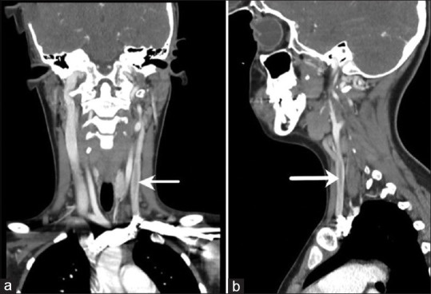
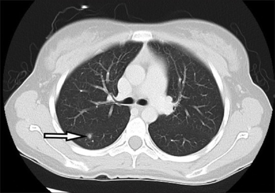
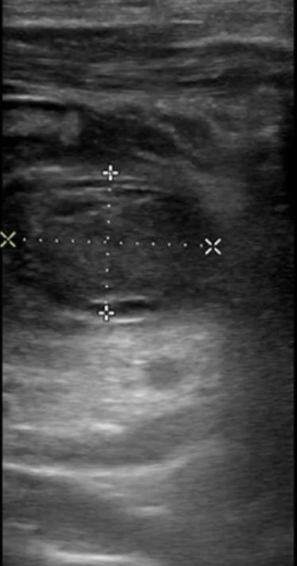
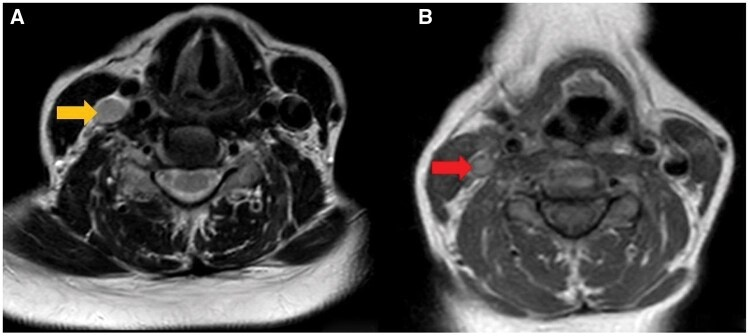
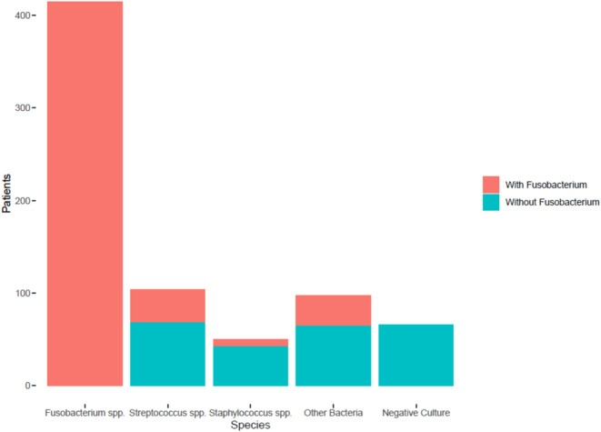

238 — Hội chứng Lemierre & huyết khối tĩnh mạch cảnh trong nhiễm khuẩn / Lemierre syndrome & septic internal jugular vein thrombophlebitis
Tags: pattern:huyet-khoi-tm-canh-trong pattern:thuyen-tac-phoi-nhiem-khuan pattern:apxe-khoang-co vung:co vung:phoi protocol:CT-co-can-quang protocol:MRV protocol:CT-nguc
Mức chắc chắn (certainty): tổng hợp y văn (literature synthesis) — gom số liệu từ các nguồn open access dưới đây + ca nguyên văn CC BY/CC BY-NC-ND.
- Phân tích individual patient data 712 ca: Frehner et al., PMC12460448.
- Phân tích 321 ca về chống đông: Tsuda et al., PMC13317357.
- Meta-analysis 394 ca: Gore 2020, PMC7394644.
- Tổng quan nhi khoa: Lavalle et al., PMC10974575.
1. Tổng quan — từ viêm họng đến huyết khối tĩnh mạch cảnh trong và thuyên tắc phổi
- Hội chứng Lemierre (Lemierre syndrome) là nhiễm khuẩn huyết kỵ khí sau viêm họng, đặc trưng bởi viêm tắc tĩnh mạch cảnh trong nhiễm khuẩn (septic thrombophlebitis of the internal jugular vein — IJV) và thuyên tắc mủ đi xa, hay gặp nhất là phổi.
- Dịch tễ: khoảng 3,6 ca/triệu dân/năm (Lavalle et al. 2024, PMC10974575); tuổi trung bình ~20–21, trung vị 25 tuổi (IQR 17–45) trong phân tích 321 ca (Tsuda et al. 2026, PMC13317357). Bệnh cảnh điển hình: thanh thiếu niên/người trẻ khỏe mạnh, viêm họng 1–3 tuần trước, sốt cao, sưng/đau một bên cổ.
- Sinh lý bệnh (vì sao tạo huyết khối):
- Fusobacterium necrophorum — trực khuẩn Gram âm kỵ khí, thường trú ở họng miệng — tăng sinh sau viêm họng/viêm amidan, phá hàng rào niêm mạc.
- Vi khuẩn lan qua khoang bên hầu (parapharyngeal space) vào tĩnh mạch cảnh trong, gây viêm nội mạc + huyết khối; huyết khối trở thành ổ nhiễm khuẩn liên tục thả mảnh mủ.
- Độc tố leukotoxin và endotoxin, cùng khả năng gây ngưng kết tiểu cầu, của F. necrophorum làm dễ huyết khối và hoại tử mô.
- Mảnh mủ theo dòng máu về phổi → thuyên tắc phổi nhiễm khuẩn (septic pulmonary embolism), áp-xe phổi, tràn mủ màng phổi; có thể lên não (3,0%), xương, khớp, gan.
- Định nghĩa thực hành (dùng trong nghiên cứu Tsuda): (1) có nhiễm trùng hầu họng trước đó + (2) viêm tắc IJV hoặc thuyên tắc phổi nhiễm khuẩn xác nhận bằng hình ảnh/mô học. Định nghĩa này giúp không bỏ sót thể "Lemierre-like" do tụ cầu/liên cầu.
- Vì sao hình ảnh là chốt (vật lý):
- CT cản quang cổ: lòng mạch bình thường ngấm thuốc đồng nhất; huyết khối là vùng giảm đậm độ (filling defect) trong lòng tĩnh mạch, thành mạch ngấm thuốc, mỡ quanh tăng đậm độ do viêm. Đây là tiêu chuẩn vàng theo y văn nhi (Lavalle et al. 2024).
- Siêu âm tại giường: huyết khối tăng âm trong lòng mạch, tĩnh mạch không xẹp khi ép, mất tín hiệu Doppler; đo được kích thước (ca dưới đây: 1,22 × 1,80 cm). Hạn chế: đoạn sau xương đòn/xương hàm không thấy rõ.
- MRI: mất flow void bình thường trên T2; tín hiệu huyết khối thay đổi theo tuổi máu; T1 sau tiêm thấy viền ngấm thuốc quanh huyết khối và viêm mô quanh. MRV xác nhận vị trí/lan và theo dõi tái thông.
- CT ngực: thuyên tắc phổi nhiễm khuẩn điển hình là nốt/mảng ngoại vi hai bên, hình nêm, có thể hoại tử tạo hang, kèm tràn dịch/tràn mủ màng phổi. Dấu "mạch nuôi" (feeding vessel) gợi ý nhưng không đặc hiệu.
- Con số dịch tễ – tiên lượng cần nhớ:
- Tử vong 4,1% (16/394) trong meta-analysis 1990–2017 (Gore 2020, PMC7394644).
- Tổng quan nhi ghi 2–4% dù đã có kháng sinh (Lavalle et al. 2024).
- Thuyên tắc phổi nhiễm khuẩn 148/394 (37,6%), thuyên tắc não 12/394 (3,0%), viêm màng não 2,0% (Gore 2020). Con số thuyên tắc phổi khác lớn giữa các nguồn: 91% trong 712 ca IPD (Frehner et al. 2025, PMC12460448) — do khác tiêu chuẩn chọn ca và mức độ tìm tổn thương trên CT ngực, không phải mâu thuẫn sinh học.
- Vi khuẩn (712 ca, 574 ca cấy dương): Fusobacterium spp. 415 ca (72,3%), tụ cầu/liên cầu 108 ca, vi khuẩn khác 51 ca (Frehner et al. 2025). Không phát hiện vi khuẩn ở 138/712 ca (19,4%) — đừng loại trừ chỉ vì cấy âm.
- Khác biệt theo tác nhân (Frehner et al. 2025): Fusobacterium gặp ở người trẻ (69% ca 16–30 tuổi), huyết khối IJV 63%, thuyên tắc phổi 91%; tụ cầu/liên cầu gặp ở người lớn hơn (30% ca > 45 tuổi), huyết khối IJV 94% nhưng thuyên tắc phổi chỉ 69%.
2. Mẫu hình + chẩn đoán phân biệt theo đường vào (Gamut)
- Đường hầu họng kinh điển (Fusobacterium): viêm họng/viêm amidan → áp-xe quanh amidan/khoang bên hầu → huyết khối IJV → thuyên tắc phổi. Trẻ vị thành niên, sốt cao, cổ một bên.
- Thể "Lemierre-like" do tụ cầu/liên cầu: người lớn hơn, ổ nhiễm nguyên phát ở da/răng/xoang; huyết khối IJV rõ hơn, thuyên tắc phổi ít hơn (Frehner et al. 2025).
- Đường do catheter (catheter-associated IJV thrombosis): không có viêm họng; thường không nhiễm khuẩn huyết, nhưng có thể nhiễm khuẩn catheter → phải phân biệt bằng cấy đầu catheter + lâm sàng nhiễm trùng.
- Đường răng (odontogenic): áp-xe quanh chóp/răng khôn → khoang dưới hàm/bên hầu → IJV. Hay gặp ở người lớn, vi khuẩn hỗn hợp kỵ khí.
- Đường tai (otogenic): viêm tai–chũm → huyết khối xoang sigma–ngang rồi lan xuống IJV; bệnh cảnh khác với Lemierre kinh điển, xem 236 và 237.
- Không nhiễm khuẩn (bland thrombosis): ung thư đầu–cổ chèn ép, hội chứng tăng đông/Trousseau, sau xạ — không sốt, không thuyên tắc mủ; điều trị khác hoàn toàn.
- Lao hạch cổ (TB lymphadenitis): diễn tiến mạn, hạch hoại tử trung tâm, vôi hóa; không có huyết khối IJV cấp.
- Viêm mô hoại tử cổ (cervical necrotizing fasciitis): khí trong mô, lan nhanh, độc tính nặng; có thể đồng thời với Lemierre — tìm khí/ dịch trung thất.
- Thuyên tắc phổi nhiễm khuẩn từ tim phải (endocarditis): có tổn thương van tim, yếu tố nguy cơ tiêm chích; không có huyết khối IJV.
- Gợi nhớ "SORE THROAT → NECK → LUNG": đau họng kéo dài → sưng cổ một bên → nốt phổi ngoại vi/có hang. Khi đủ chuỗi này, đừng chờ cấy máu mới điều trị.
3. Bảng so sánh phân biệt (ma trận đối chiếu)
| Thực thể (entity) | Hình ảnh điển hình | Chốt vào (rule-in) | Chốt loại (rule-out) | Gợi ý xác nhận |
|---|---|---|---|---|
| Lemierre kinh điển (Fusobacterium) | CT cổ: khuyết thuốc IJV, thành ngấm thuốc, viêm mô quanh; CT ngực: nốt ngoại vi ± hang | Viêm họng trước đó + sốt + sưng cổ một bên + huyết khối IJV; cấy kỵ khí dương | Huyết khối không sốt, không viêm quanh, có yếu tố ung thư/dây catheter → bland thrombosis | CECT cổ thì tĩnh mạch + cấy máu kỵ khí + CT ngực |
| Lemierre-like (tụ cầu/liên cầu) | Huyết khối IJV rõ, ổ nhiễm nguyên phát ở da/răng; thuyên tắc phổi ít hơn | Ổ nhiễm ngoài hầu họng + huyết khối IJV + cấy Gram dương | Cấy chỉ có Fusobacterium đơn thuần, bệnh cảnh điển hình → thể kinh điển | Cấy máu + dịch ổ nguyên phát; cân nhắc MRSA |
| Huyết khối IJV do catheter | Khuyết thuốc quanh đầu catheter, không viêm mô lan tỏa | Catheter cùng bên + không sốt/không thuyên tắc mủ | Sốt cao + nốt phổi ngoại vi + viêm khoang cổ → Lemierre | Siêu âm/CT; cấy máu + đầu catheter |
| Áp-xe khoang bên hầu (chưa huyết khối) | Khối dịch hoại tử trung tâm, viền ngấm, đẩy thành hầu; IJV có thể còn thông | Khối áp-xe + đẩy thành hầu + sốt | IJV có khuyết thuốc lòng mạch → đã có huyết khối, không chỉ áp-xe | CT/MRI cổ; chọc hút/dẫn lưu |
| Lao hạch cổ | Hạch hoại tử trung tâm, vôi hóa, chuỗi cổ; không huyết khối | Diễn tiến nhiều tuần, vôi hóa, không nhiễm khuẩn huyết cấp | Sốt cấp + huyết khối IJV + nốt phổi → Lemierre | CT ngực, IGRA, sinh thiết hạch |
| Huyết khối IJV do ung thư/tăng đông | Khuyết thuốc IJV, không viêm mô, không khí, có khối nền sọ/cổ | Khối ác tính cùng bên + không sốt | Sốt + viêm mô + thuyên tắc mủ → nhiễm khuẩn | MRI/CT có cản quang, xét nghiệm tăng đông, sinh thiết |
| Thuyên tắc phổi nhiễm khuẩn do viêm nội tâm mạc | Nốt/mảng phổi ngoại vi hai bên ± hang; van tim bất thường | Cấy máu dương + siêu âm tim có vegetation | Huyết khối IJV + viêm họng → Lemierre | Siêu âm tim, cấy máu nhiều lần |

CT cổ cản quang (coronal + sagittal): khuyết thuốc trong lòng tĩnh mạch cảnh trong trái (mũi tên), thành mạch ngấm thuốc. Nguồn: Pedraza Gonzalez L et al., J Family Med Prim Care 2026, PMC13387702 Fig. 1, CC BY-NC-ND 4.0 (ảnh dùng nguyên bản, không crop/ghép).
CT ngực cửa sổ phổi: nốt ngoại vi nhỏ ở đáy phổi phải (mũi tên), gợi ý thuyên tắc mủ; chưa có hang. Nguồn: Pedraza Gonzalez L et al., J Family Med Prim Care 2026, PMC13387702 Fig. 2, CC BY-NC-ND 4.0 (ảnh dùng nguyên bản, không crop/ghép).Đọc "chuỗi Lemierre" trên hình ảnh
- Ổ nguyên phát: amidan/khoang bên hầu/răng/tai — có áp-xe, khí, viêm mô không?
- Tĩnh mạch: IJV có giãn, thành ngấm thuốc, khuyết thuốc không? Có lan lên xoang sigma/xoang hang không?
- Phổi: nốt/mảng ngoại vi, hai bên, hình nêm, có hang; tràn dịch/tràn mủ màng phổi.
- Di căn khác: não (áp-xe), gan/lách, khớp, xương — khám lâm sàng và chụp khi có triệu chứng.
4. Protocol chụp + điều trị & theo dõi
4.1. Protocol
- CECT cổ–ngực: cản quang iod thì tĩnh mạch, lát ≤ 2 mm, từ nền sọ đến quai động mạch chủ; dựng đa bình diện. Đây là chuỗi đầu tay khi nghi Lemierre (Lavalle et al. 2024).
- Siêu âm tại giường: khi bệnh nhân không ổn định/không tiện CT; đánh giá IJV đoạn cổ thấp, đo kích thước huyết khối, Doppler. Không thay thế CT để đánh giá lan khoang sâu/trung thất.
- MRI cổ + MRV: khi cần phân biệt mô mềm, đánh giá xoang hang, hoặc theo dõi tái thông; DWI giúp phân biệt áp-xe với phù.
- CT ngực: chỉ định khi có triệu chứng hô hấp/sốt kéo dài hoặc tầm soát thuyên tắc phổi; X-quang có thể bình thường sớm.
- Xét nghiệm: cấy máu kỵ khí trước kháng sinh (nhiều lần), cấy mủ ổ nguyên phát, PCR 16S khi cấy âm; siêu âm tim nếu có tiếng thổi/nguy cơ viêm nội tâm mạc.
4.2. Điều trị (số liệu để cân nhắc)
- Kháng sinh tĩnh mạch phủ kỵ khí: ví dụ ceftriaxone + metronidazole hoặc piperacillin–tazobactam; thời gian 3–6 tuần (Lavalle et al. 2024), trung bình 33,7 ngày (14–60) trong meta-analysis (Gore 2020).
- Kiểm soát nguồn: dẫn lưu áp-xe quanh amidan/khoang bên hầu; cắt amidan khi cần; hiếm khi thắt/cắt đoạn IJV nếu thuyên tắc mủ liên tục không kiểm soát.
- Chống đông — KHÔNG thường quy:
- Phân tích 321 ca (Tsuda et al. 2026, PMC13317357): huyết khối tiến triển 7,18% (15/209) khi có chống đông vs 18,8% (21/112) khi không; OR 0,34 (95%CI 0,16–0,70).
- Nhưng không khác biệt về thuyên tắc phổi mới (OR 0,45; 0,18–1,13), chảy máu nặng (OR 1,50; 0,44–5,08) hay tử vong 30 ngày (2,2% vs 1,8%; OR 0,83; 0,13–5,15).
- Meta-analysis 394 ca: chống đông không cải thiện tái thông (OR 1,6; 0,3–9,4) hay tử vong (OR 0,6; 0,1–2,9) (Gore 2020).
- Kết luận thực hành: cân nhắc chọn lọc khi huyết khối lan rộng/lan xoang hang, thuyên tắc phổi tái diễn hoặc tăng đông; không dùng đại trà khi huyết khối khu trú IJV.
- Theo dõi: khám cổ + siêu âm/CT lặp ~6 tuần (trung bình 51,8 ngày, 3–365 ngày — Gore 2020); CT ngực lặp nếu sốt dai dẳng; đánh giá di chứng thần kinh sọ (IX–XII) và hội chứng sau nhiễm khuẩn.
flowchart TD
A[Viêm họng + sốt + sưng cổ một bên] --> B[CECT cổ thì tĩnh mạch, lát ≤ 2 mm]
B -->|Khuyết thuốc IJV + viêm mô| C[Lemierre: cấy máu kỵ khí + KS IV phủ kỵ khí]
B -->|Không huyết khối, có khối dịch| D[Áp-xe khoang cổ: dẫn lưu + KS]
C --> E{Triệu chứng hô hấp?}
E -->|Có| F[CT ngực: nốt ngoại vi/hang, tràn mủ]
E -->|Không| G[Theo dõi sát; CT ngực nếu sốt kéo dài]
F --> H{Thuyên tắc lan rộng / xoang hang / tái diễn?}
H -->|Có| I[Cân nhắc chống đông chọn lọc + ngoại khoa]
H -->|Không| J[KS 3-6 tuần + kiểm soát nguồn]
D --> J
I --> J
J --> K[Siêu âm/CT lặp ~6 tuần; khám dây IX-XII]
5. Biến thể bình thường và cạm bẫy
- Không phân lập được vi khuẩn không loại trừ Lemierre: chỉ 574/712 ca (80,6%) có vi khuẩn mọc (Frehner et al. 2025); kháng sinh trước đó làm sạch cấy. Dùng PCR/16S hoặc cấy mủ sâu.
- Siêu âm âm tính vì huyết khối ở đoạn sau xương đòn/xương hàm — nếu nghi cao, CECT cổ là bắt buộc.
- Nốt phổi ngoại vi ở người trẻ dễ bị đọc là "di căn" hoặc "lao": bối cảnh sốt + đau họng + sưng cổ định hướng thuyên tắc mủ; hỏi thêm yếu tố nguy cơ ung thư trước khi sinh thiết.
- Huyết khối IJV "vô khuẩn" do catheter/ung thư không điều trị như Lemierre: tìm khối ác tính, yếu tố tăng đông, tránh kháng sinh kéo dài vô ích.
- Không bỏ sót lan trung thất: đau ngực, khó thở, khí trong trung thất → viêm trung thất hoại tử (cấp cứu ngoại khoa), không chỉ "thuyên tắc phổi".
- Fusobacterium là hệ vi khuẩn miệng bình thường: một lần cấy dương ở bệnh nhân không phù hợp lâm sàng có thể là nhiễm bẩn; chẩn đoán cần hội chứng lâm sàng + hình ảnh.
- Trẻ em: bệnh cảnh có thể không điển hình (chỉ sốt + đau cổ); tổng quan nhi ghi nhận chống đông được dùng ở ~63,7% ca nhi nhưng bằng chứng còn yếu (Lavalle et al. 2024).
- Sau điều trị, huyết khối có thể tồn tại vài tháng dù lâm sàng tốt — không tự động kéo dài kháng sinh chỉ vì hình ảnh chưa sạch.
6. Tự lượng giá — Blind Quiz
Ca 1 — Nữ 58 tuổi, sưng cổ một bên 2 ngày, sốt. Siêu âm tại giường trước khi chụp CT.

- Hỏi: cấu trúc hình ống bị tổn thương là gì? Trong lòng có gì? Đo như thế nào? Bước tiếp theo?
Bấm để hiện đáp án (findings + chẩn đoán)
- Dấu hiệu (findings): tĩnh mạch cảnh trong giãn, lòng mạch có khối tăng âm (huyết khối), đo được 1,22 × 1,80 cm; tĩnh mạch không xẹp khi ép.
- Chẩn đoán (diagnosis): huyết khối tĩnh mạch cảnh trong — trong bối cảnh sốt + sưng cổ, nghĩ Lemierre. Cần CECT cổ để đánh giá lan khoang sâu/trung thất và cấy máu kỵ khí.
- Nguồn: Hotton MF et al., Clin Pract Cases Emerg Med 2026, PMC13518029 Image 1, CC BY 4.0.
Ca 2 — Nữ 17 tuổi, đau họng và đau cổ một bên 3 ngày, sốt. Đọc CT cổ và CT ngực.
- Hỏi: (A) bất thường trong lòng tĩnh mạch? (B) nốt ở phổi nằm đâu, hình dạng? Chẩn đoán liên kết hai ổ?
Bấm để hiện đáp án (findings + chẩn đoán)
- Dấu hiệu (findings): khuyết thuốc (filling defect) trong tĩnh mạch cảnh trong trái, lan từ tĩnh mạch sau hàm/mặt; nốt ngoại vi nhỏ ở đáy phổi phải, chưa có hang.
- Chẩn đoán (diagnosis): hội chứng Lemierre — viêm tắc IJV nhiễm khuẩn + thuyên tắc phổi nhiễm khuẩn. Điều trị: kháng sinh IV phủ kỵ khí 3–6 tuần, dẫn lưu ổ nguyên phát nếu có, cân nhắc chống đông chọn lọc.
- Nguồn: Pedraza Gonzalez L et al., J Family Med Prim Care 2026, PMC13387702 Fig. 1 & 2, CC BY-NC-ND 4.0. Điều trị trong ca: 4 tuần beta-lactam + metronidazole, không chống đông, hồi phục hoàn toàn.
Ca 3 — Nữ 41 tuổi, 4 ngày sau căng da thái dương: sưng–đau vùng thái dương, há miệng hạn chế, khó nuốt, KHÔNG sốt. Đọc MRI cổ.

- Hỏi: tĩnh mạch nào bị viêm tắc? Đường lan từ đâu đến đâu? Vì sao phải khám kỹ khoang cổ sâu?
Bấm để hiện đáp án (findings + chẩn đoán)
- Dấu hiệu (findings): mất flow void/tín hiệu bất thường trong tĩnh mạch thái dương giữa (mũi tên vàng) và tĩnh mạch cảnh trong, kèm viêm mô lan nhiều khoang cổ; T1 sau tiêm thấy thành mạch ngấm thuốc (mũi tên đỏ).
- Chẩn đoán (diagnosis): viêm tắc tĩnh mạch thái dương giữa lan vào hệ cảnh trong — Lemierre sau thủ thuật. Đây là biến thể đường vào do thủ thuật, nhắc rằng Lemierre không chỉ sau viêm họng.
- Nguồn: Aytaç A & Yanık Keyik B, BJR Case Rep 2026, PMC13075948 Fig. 3, CC BY 4.0.
Ca 4 — Biểu đồ vi khuẩn phân lập trong 712 ca Lemierre. Nhìn biểu đồ trước, đừng đọc chú giải vội.

- Hỏi: tác nhân chiếm ưu thế là gì? Nhóm nào hay gặp ở người trẻ? Vì sao tỷ lệ huyết khối IJV và thuyên tắc phổi khác nhau giữa các nhóm?
Bấm để hiện đáp án (findings + chẩn đoán)
- Dấu hiệu (findings): cột lớn nhất là Fusobacterium spp. (
415 ca), sau đó Streptococcus/Staphylococcus (108) và nhóm khác; 574/712 ca có vi khuẩn mọc. - Chẩn đoán (diagnosis): Lemierre do Fusobacterium hay gặp ở 16–30 tuổi, với huyết khối IJV 63% và thuyên tắc phổi 91%; thể do tụ cầu/liên cầu gặp ở người > 45 tuổi, huyết khối IJV 94% nhưng thuyên tắc phổi 69%. Đừng mặc định "Lemierre = chỉ Fusobacterium".
- Nguồn: Frehner M et al., Infection 2025, PMC12460448 Fig. 1, CC BY 4.0.
Bài liên quan chéo
- 236 – Viêm tai xương chũm & biến chứng nội sọ (huyết khối xoang do tai)
- 237 – Biến chứng thần kinh sọ của viêm tai (Gradenigo, liệt VII, viêm mê nhĩ)
- 730 – Nhiễm trùng khoang cổ sâu (áp-xe khoang bên hầu, viêm trung thất)
- 163 – Pylephlebitis & huyết khối tĩnh mạch mạc treo (huyết khối nhiễm khuẩn ổ bụng)
- 016 – Nốt phổi đơn độc có tiền sử ung thư (nốt ngoại vi: di căn vs nhiễm trùng)
- 214 – Nhiễm trùng TKTW (áp-xe não do thuyên tắc mủ)
- 700 – Tổng quan Đầu Cổ
Không dùng để chẩn đoán độc lập khi chưa có người hướng dẫn.